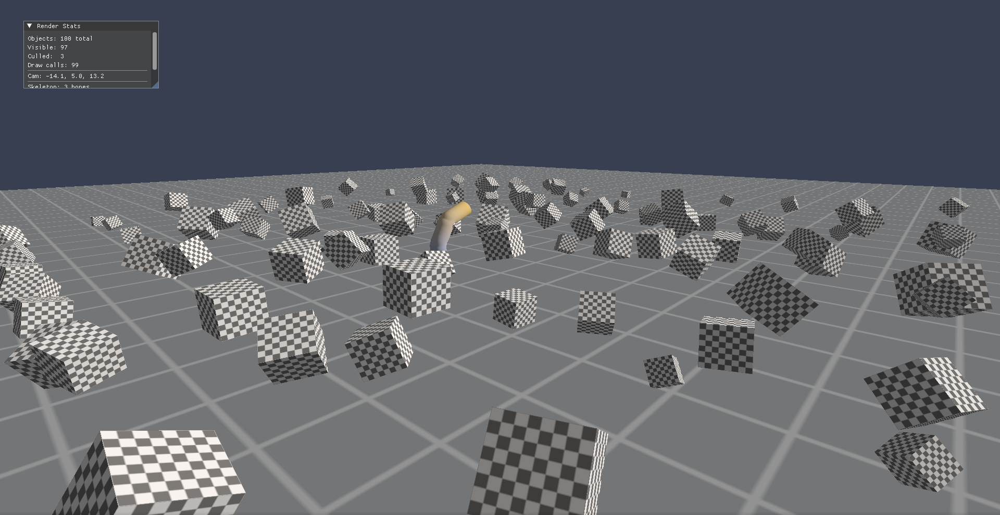
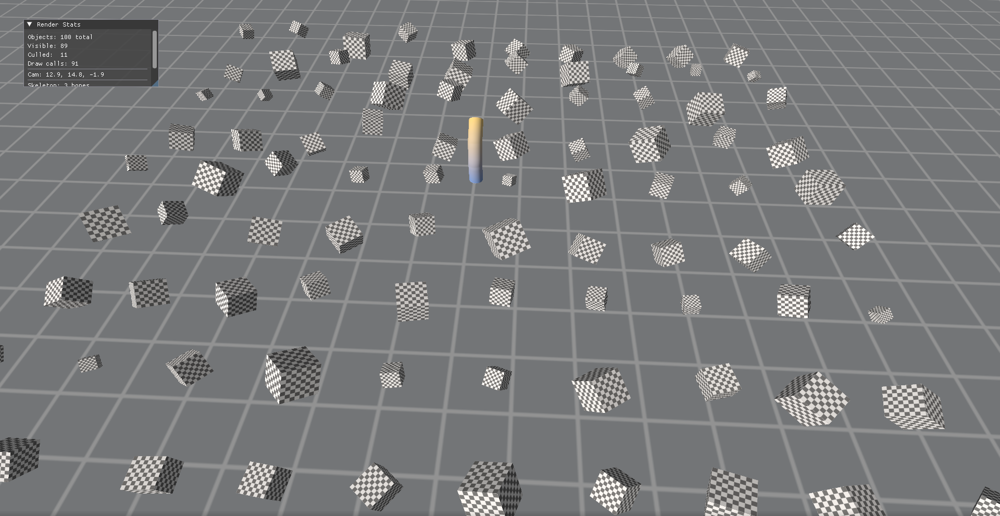

SagaWiki
The canonical, current documentation for SagaEngine architecture, tooling, evidence, and product boundaries.
Status: SagaEngine is an active engine and authoring-toolchain codebase, not a finished game engine distribution. Statements here describe bounded repository capabilities; source, tests, manifests, and accepted evidence remain authoritative for their respective domains.
Start here
Contributors should read Getting started, then the module ownership rules. Evaluators should pair the current product position with the explicit not-implemented and non-claim boundaries.
Direction
The long-term focus is creator-driven, self-hostable persistent community worlds with authoritative simulation, persistent state, modular gameplay packages, and C# source authoring. That direction is prioritization, not evidence that those product capabilities are complete.
Repository snapshots
These images are bounded sandbox render evidence, not release screenshots.

